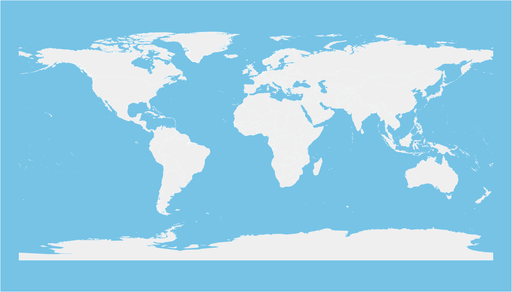
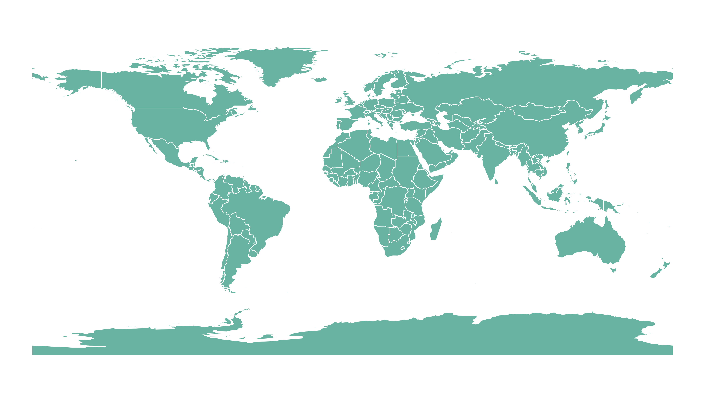

Related chart types

Map

Choropleth

Hexbin map

Cartogram

Connection

Bubble map
Shapefiles,
a popular format for storing geospatial information,
are easily handled in R using the sf
package. This guide will demonstrate how to read
shapefiles into R and visualize them using either base
R or the ggplot2
package.
If you did not find the geospatial data you need in existing R packages (see the map section), you need to find this information elsewhere on the web.
Usually, you will find it as a shape file format. This format is composed by several files that you need to keep together in the same folder.
You need to dig the internet to find the shape file you are interested in. For instance, this URL will redirect you to a zipped shape file containing the world boundaries.
You can download it and unzip it with R:
# Download the shapefile. (note that I store it in a folder called DATA. You have to change that if needed.)
download.file("http://thematicmapping.org/downloads/TM_WORLD_BORDERS_SIMPL-0.3.zip", destfile = "DATA/world_shape_file.zip")
# You now have it in your current working directory, have a look!
# Unzip this file. You can do it with R (as below), or clicking on the object you downloaded.
unzip("DATA/world_shape_file.zip", junkpaths = FALSE)
# -- > You now have 4 files. One of these files is a .shp file! (TM_WORLD_BORDERS_SIMPL-0.3.shp)sfThe sf package offers the st_read() and the
read_sf() functions that allows to read
shapefile using the following syntax.
As a result you get a geospatial object (my_sf here)
that contains all the information we need for further mapping. Please
try the following command to understand how this object works:
print(my_sf): tells you the max and min coordinates,
the kind of projection in use and the the first few
rows of the data associated with the regions.nrow(my_sf): how many regions you havebase RThe basic plot() function knows how to plot a geospatial
object. Thus you just need to pass it my_sf and add a
couple of options to customize the output.
# Basic plot of this shape file:
par(mar = c(0, 0, 0, 0))
plot(st_geometry(my_sf), col = "#f2f2f2", bg = "skyblue", lwd = 0.25, border = 0)
ggplot2It is totally possible (and advised) to build the map with ggplot2, using the
geom_sf() function as described below.
# Plot it
library(ggplot2)
ggplot(my_sf) +
geom_sf(fill = "#69b3a2", color = "white") +
theme_void()
This post explains how to read and plot a shapefile in R.
You might be interested in how to customize the map (select regions, change colors, etc.) and more generally in the map section.
Related chart types